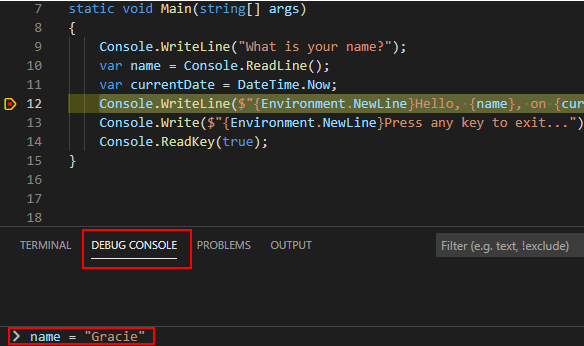
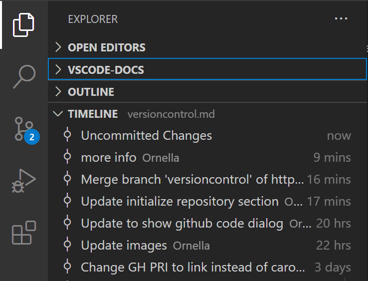
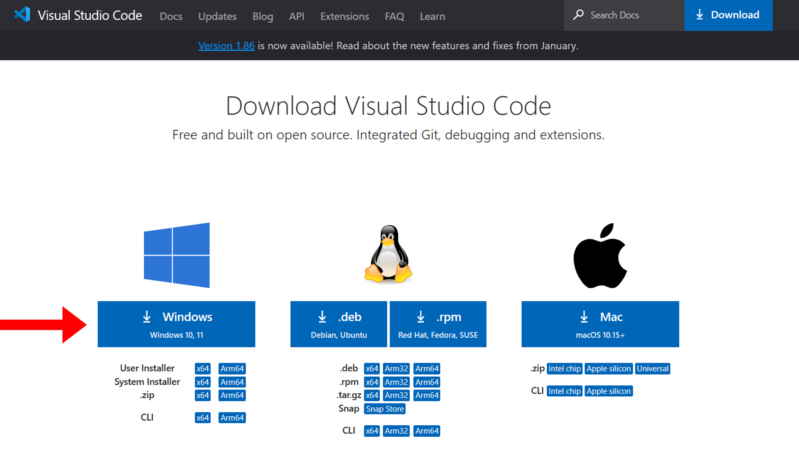

VS Code là gì
Visual Studio Code, hay gọi tắt là VS Code là một trình soạn thảo mã nguồn miễn phí được Microsoft phát triển. VS Code hỗ trợ cả 3 hệ điều hành Windows, MacOS và Linux.

Tính năng nổi bật của VS Code
Dù là phần mềm soạn thảo code nhẹ, nhưng VS Code lại được tích hợp nhiều tính năng hay ho, dưới đây là một số tính năng nổi bật của VS Code.
Hỗ trợ đa ngôn ngữ
VS Code hỗ trợ cho nhiều ngôn ngữ lập trình phổ biến như: HTML, CSS, JavasScript, Java, C, C++, C#, F#, JSON, Python, v.v
Hỗ trợ gỡ lỗi
VS Code hỗ trợ mạnh mẽ cho quá trình gỡ lỗi. Các công cụ và tính năng trong ứng dụng này sẽ giúp bạn tìm và sửa lỗi trong mã nguồn của mình một cách nhanh chóng, dễ dàng và hiệu quả.

Hỗ trợ Git
Nếu bạn đang thực hiện một dự án với một nhóm, việc chia sẻ mã nguồn cho các thành viên trong nhóm là việc cần thiết, vì thế nên VS Code hỗ trợ Git để người dùng có thể commit, push project lên GitHub ngay bên trong phần mềm.

Hỗ trợ, cho phép người dùng tùy biến
Với kho lưu trữ các gói Extension(các gói mở rộng) đồ sộ của VS Code, người dùng có thể tùy chỉnh giao diện hoặc mở rộng chức năng của phần mềm với các gói mở rộng do chính người dùng tạo ra.
Hướng dẫn cài đặt VS Code
Để có thể cài đặt VS Code cho máy tính Win10/11, các bạn hãy làm theo các bước sau:
-
Bước 1: Tìm kiếm với từ khóa VS Code download trên Google
-
Bước 2: Nhấn vào trang của Visual Studio Code, bạn có thể truy cập đường link tải xuống tại đây
-
Bước 3: Kéo xuống dưới và chọn Windows ở phần tải xuống để cài file Setup của VS Code

-
Bước 4: Chuột phải file Setup VS Code vừa tải và chọn Open
-
Bước 5: Đồng ý điều khoản của VS Code và nhấn Next để tiếp tục
-
Bước 6: Chọn đường dẫn để tải xuống VS Code, bạn có thể chuyển đường dẫn sang ổ D: hoặc ổ khác, nhấn Next để tiếp tục
-
Bước 7: Tạo Thư mục Start Menu cho VS Code, các bạn có thể để mặc định, nhấn Next để tiếp tục
-
Bước 8: Tạo Shortcut cho VS Code ở Desktop, bạn có thể tạo hoặc không, nhấn Next để tiếp tục
-
Bước 9: Nhấn Install để tải VS Code về máy tính
-
Bước 10: Sau khi VS Code đã được cài trên máy, bạn có thể nhấn Finish để thoát chương trình Setup
Bạn cũng có thể tải file Setup của VS Code tại đầu trang